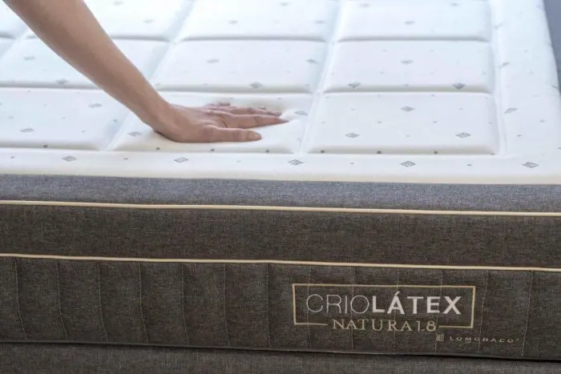
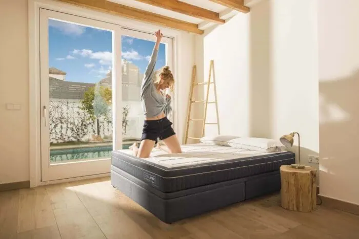
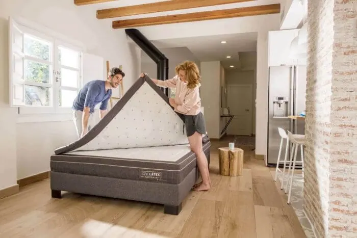
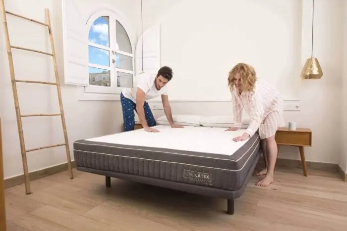

¿Cómo lavar la funda de un colchón Lo Monaco?
Las instrucciones para lavar la funda de un colchón de LoMonaco es una duda constante entre los clientes, y es que, para mantener nuestro colchón como el primer día, la funda debe lucir impecable. Pensemos que el colchón tiene una vida útil que se alcanza a los 8/10 años de uso, sin embargo, una funda manchada es una circunstancia que deteriora irreversiblemente el producto prematuramente.
Nuestra recomendación es que siempre consultes las instrucciones de lavado, que aparecen en la funda del colchón, normalmente prendida al producto en el interior. No obstante, te dejamos las instrucciones de uso de cada una de las fundas de los colchones de Lo Monaco.
Limpiar funda de colchones Látex Natura
Cualquier colchón Látex Natura de Lo Monaco, ha alcanzado ya su vida útil, porque que este colchón se lanzó en el año 1999 y se relanzó en la versión Gran Natura en 2005, por lo tanto, nuestra primera recomendación es que renueves el colchón en su totalidad, no obstante, si aún disfrutas de alguno y tiene la funda deteriorada, el cómo lavar la funda del colchón de Lo Monaco de látex es sencillo, puedes meterla en la lavadora a 30 grados con un ciclo corto.

¿Se puede lavar la funda de un colchón LoMonaco de Viscolátex?
La funda de los colchones Viscolátex de Lo Monaco, incorpora viscoelástica, una superficie compuesta por miles de minúsculos poros, que absorben rápidamente cualquier vertido, por lo que no hay posibilidad de lavarla.
Si se ha producido un derrame, puedes limpiar las manchas del colchón. Así, lo ideal es quitar rápidamente la funda y dejar secar por separado núcleo y funda, eso sí, siempre lejos del sol.
Si es una mancha pequeña (tipo café) prueba en una superficie oculta y pequeña con productos de limpieza en seco, y procede tal y como se te indique en las instrucciones del quitamanchas.
Limpiar la funda de colchones Triple Natura.
Con las fundas que incorporan cualquier tipo de acolchado, como es el caso de las gamas Posturtherapy y Triple Natura en todas sus versiones, se seguirá el mismo procedimiento que con las fundas viscolátex y es que no hay posibilidad de lavar este tipo de fundas, ni siquiera en seco ya que contienen espuma en su interior.
Lavar funda colchones Criolátex
Debido al sistema de relleno que incorpora la funda, no hay posibilidad tampoco de lavado ni de aplicar ningún tipo de tratamiento. De haberse manchado la funda e incluso haber dejado inutilizado el producto, te ofrecemos la posibilidad de que compres una funda.

¿Quieres comprar la funda del colchón Lo Monaco?
Si desafortunadamente la funda de tu colchón tiene muchas manchas o ha quedado inutilizada, te recomendamos que te pongas en contacto con nuestro servicio de Atención al Cliente, desde donde sabrán recomendarte qué medida adoptar según sea el deterioro y el tipo de colchón que tengas.
Eso sí, para colchones de más de 7 años, recomendamos en vez de comprar la funda, que se valore el cambio completo del colchón, ya que un colchón con una trayectoria prolongada debe presentar otros signos de deterioro por uso (no quedan cubiertos por la garantía).
Cuida tu colchón LoMonaco con un cubrecolchon
Lo ideal es que la funda nunca llegara a mancharse, esto podría conseguirse usando un cubre que protegiera al máximo el colchón de todo tipo de vertidos de líquidos, polvo, sudor y humedad.
El colchón necesita un buen cuidado para cumplir plenamente su cometido y el complemento perfecto es la sábana impermeable de Lo Monaco.
Cómo mantener limpia mi cama diariamente
Hay una serie de recomendaciones de uso para llevar a cabo diariamente con nuestro colchón y en general con la cama. Lo ideal es al levantarnos por la mañana, dejar abierta la ventana 15 ó 20 minutos y sacudir y ahuecar la funda exterior de nuestro colchón. También podemos fijarnos atentamente, si existen pequeñas motas de polvo acumuladas en los recovecos de la funda, que podemos retirar pasando suavemente por la zona con un paño seco o un cepillo de cerdas blandas.
Los colchones de Grupo Lo Monaco, están compuestos de un núcleo y dos fundas (una interior y otra exterior). Es recomendable, independientemente que sea el colchón viscoelástico, un colchón de látex o cualquier material, se recomienda voltear de pies a cabeza (en el sentido de las agujas del reloj) y con una mayor periodicidad, abrir la funda y voltear el interior (núcleo) del colchón.

Limpieza de la almohada
La funda de la almohada es uno de los elementos de la cama dónde más sustancias se acumulan, y esto nos puede llegar a ocasionar problemas en nuestra salud. Las almohadas de Grupo Lo Monaco, incorporan una funda que puede ser recomendable lavar en cada cambio de estación.
Mantenimiento de bases tapizadas, somieres y canapés abatibles
La superficie sobre la que reposa el colchón ya sea una base tapizada, un somier o un canapé abatible, debe permanecer también impecable para contribuir a la higiene del equipo de descanso.
Si se trata de un somier, nada más simple que, a la hora de girar el colchón, aprovechar y pasar por láminas y patas un trapo seco y retirar el polvo. Con respecto a la base tapizada podemos sacudir con un trapo seco o cepillar.
En cuanto al cajón del canapé, para asegurarnos que todo lo que guardamos en el mismo quede limpio y en perfectas condiciones, debemos pasar con cierta periodicidad un trapo húmedo por sus esquinas, paredes y fondo. En cuanto al exterior del cajón, utilizaríamos la misma metódica, pasaríamos un trapo levemente húmero. Además, si nuestro canapé tiene patas, nos resultaría mucho más fácil limpiar por debajo del mismo.
Accesorios para un descanso saludable
No hay ninguna sensación comparada a la de meterse en una cama limpia y confortable. Esta experiencia sin duda la aportan nuestras sábanas y ropa de cama.
La ropa de cama aporta comodidad a la hora de dormir y también proporciona higiene. Para conseguir una higiene plena ¿cuándo debemos lavar el juego de sábanas? Se recomienda hacerlo una vez por semana y preferiblemente a altas temperaturas, para asegurar la higiene total.
Sin embargo, edredones, mantas y cubres, debemos lavarlos una vez al cambio de la temporada, siguiendo las recomendaciones del fabricante.

Mantener tu colchón Lo Monaco como el primer día.
Por último, además de la higiene, debes seguir unos pasos imprescindibles para mantener tu colchón en buenas condiciones:
- En primer lugar, nos tenemos que fijar en la base sobre la que reposa nuestro colchón. Una base tapizada o un somier en mal estado acarrea consecuencias negativas sobre el rendimiento del colchón.
- No dejar objetos pesados o punzantes sobre la superficie, ya que provocaría efectos perjudiciales sobre el núcleo del colchón, estropeando las capas superiores y empeorando así, nuestro confort.
- Evitar que los más pequeños de la casa, salten sobre la cama, ya que pueden estropearla.